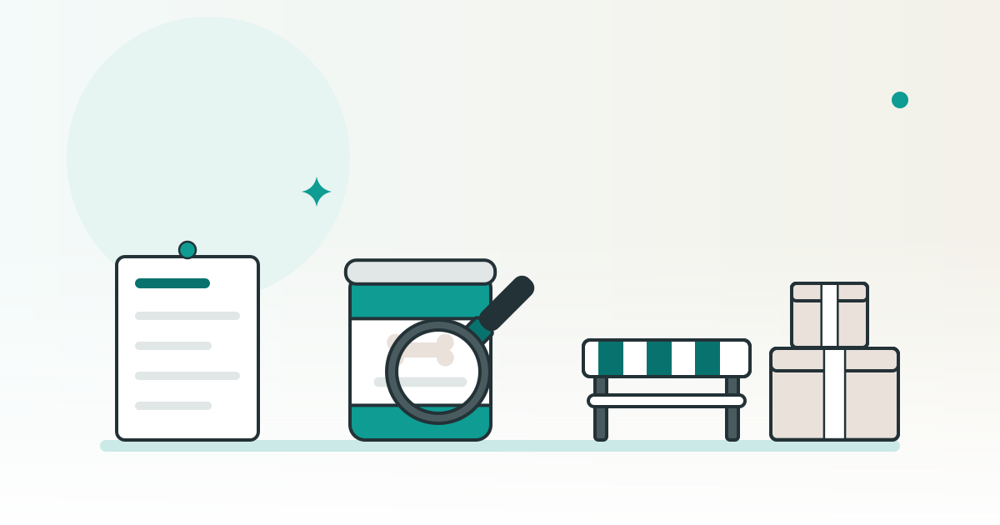

SHOPKIT コラム
ペット用品の回収情報を見つけたら対象商品と連絡の記録を整理

扱っているペット用品に似た品の回収情報を見つけたら、何と何を照らせばよいでしょうか。見つけた告知と手元の品、仕入れ・販売の記録を結び、確認できたことと残っていることを分ける進め方を紹介します。個別の商品を回収するかどうかや、責任の所在をこの記事で判断することはしません。
この記事は、完成品のネットショップを販売している SHOPKIT が書いています。
公式の告知とお店の商品を、品番と製造の時期で照らす
似た見た目だけで決めず、告知に書かれた対象条件を項目ごとに照らしましょう。品番とは、商品を見分けるための番号や記号です。製造の時期や、同じまとまりで作られた品を示す番号も、告知に対象条件として載っていれば確認します。
まず、告知の発表元と元のページを確かめます。紹介文や画像だけを見ている場合は、そこに示された原典へ戻って読みます。発表日・更新日と自分が読んだ日も分けて控え、古い写しだけで進めないようにします。
次の表は、お店で照合するときの記録欄の例です。告知にない条件を自分で補って対象を広げたり、狭めたりせず、判断できない欄を残します。
| 照らす項目 | 告知から控えること | 店で残すこと |
|---|---|---|
| 品を識別する表示 | 対象の品番・型の記号と、表示場所の説明 | 現物の表示、対応する仕入れの記録、一致したか・未確認か |
| 対象の時期やまとまり | 製造の時期や番号など、対象範囲の条件 | 現物や仕入れ先の資料で読めた内容と、読めなかった箇所 |
| 情報の出どころ | 原典のURL、発表元、発表日・更新日 | 確認した日、保存した告知の写し、照会する窓口 |
入荷日と製造の時期は別の欄にします。仕入れた日だけを見て、告知の対象に当たるかを決めないようにしましょう。
対象か分からない物は、販売と発送を止めて記録する
対象か分からない間は、その品の販売と発送を止め、確認待ちとして分けておく進め方を考えます。これは確認のための作業上の提案で、回収の決定や責任の判断とは分けて扱います。
止めた品と注文をひも付け、現物を置いた場所も記録します。同じ品番でも仕入れた時期や表示が違うなら、ひとまとめにせず、照合できる単位で分けます。「確認待ち」という札だけで終わらせず、何が読めず、誰に確かめるのかを書き添えます。
表示が消えているなど、告知と照らせない理由もそのまま残しましょう。確認が済んだ品と未確認の品を混ぜず、回答を受けたら、どの品についての回答だったかまで結びます。
告知の対象外だと確認できたことと、商品の安全性を確かめたことは分けて記録します。見た目に異常がないという観察だけで、告知の対象から外すこともしません。
告知元の案内と、自分がした連絡を分けて残す
原典に書かれた案内、窓口からの回答、店が実施した連絡を別々に残します。回収・返送などの方法は、対象品について原典で確認した内容と窓口の案内を基に進めます。店の判断で処分方法や条件を付け足さないようにしましょう。
| 分ける記録 | 残しておく内容 |
|---|---|
| 告知元の案内 | 対象の条件、求められている対応、連絡先、確認した原典と日付 |
| 店から窓口への照会 | 尋ねた対象と質問、連絡した相手と日、回答、その回答が対象とする範囲 |
| お客様への案内 | 対応する注文、伝えた内容と日、返信の有無、次に確かめること |
| 店で実施した作業 | 分けた品の置き場所、販売・発送を止めた対象、案内に沿って行ったことと未実施のこと |
お客様に案内するときも、対象が確認できた品についての連絡か、確認中の連絡かを混同しないようにします。連絡を送ったことと、返信を受けて確認できたことは別の欄にしましょう。連絡の文面全体ではなく、告知との対応関係をここで記録します。
告知が更新されたら、変わった内容と、それまでの案内先を照らします。以前の回答を消すのではなく、どの案内を基にどこまで進めたかを後からたどれる形で残します。
回収の情報を探す公的な窓口を知っておく
公的な情報の入口と、個別の告知の原典を分けて使いましょう。
消費者庁のリコール情報サイトには、検索欄と、回収や交換などのお知らせの一覧があります。
そこで見つけた情報は、発表元と対象条件を読む入口として使います。店で扱う品に該当するかは、個別の告知と現物・仕入れの記録を照らして確認します。
検索して見つからなかったことを、回収情報が存在しないという結論にはしません。品の表示を確かめ直し、仕入れ先に原典や対象範囲を尋ねるなど、未確認の点を残して確認を続けます。
回収の要否や責任、費用の扱いを、この入口の紹介から判断しないようにしましょう。窓口へ尋ねた回答も、相談した品と条件に結び付けて残します。
仕入れと販売の記録を、すぐ出せるようにしておく
仕入れた品から販売した注文まで、同じ品をたどれる手掛かりをそろえます。仕入れ先の呼び方と店の商品名が違うなら、両方を照らせる記録を持っておきましょう。
仕入れの記録、入荷した品の識別情報、販売の記録、残っている現物の置き場所を結びます。販売した品のまとまりまで特定できないときは、つながっているように書き換えず、どの範囲が分からないかを残します。
お客様の連絡先を含む記録は、確認に使う資料と目的を整理して扱います。外部へ照会するときは、誰のどの情報が必要なのかを確かめ、関係のない注文情報まで一緒に送らないようにしましょう。
普段の目視の検品とは別に、回収の告知を見つけた後の照合と連絡を残す欄を用意します。告知の写しだけを保存せず、対象の確認状況と店で行った作業へたどれる置き場所にします。
関連：ネットショップの仕入れ先はどう探す？個人が使える仕入れ先と確かめること
お店を買って始めるときに、仕入れと販売の記録の置き場所を確かめる
買う前に、仕入れ先の情報と商品を照らす資料がどこにあるかを尋ねましょう。受け取る資料の種類、品の識別情報との対応、購入後に自分で残す販売の記録を分けて確かめます。過去の記録があるかどうかも、あるものとして扱わずに質問します。
SHOPKITの2026年10月15日時点のサービスページは、商品と店舗を整えて販売を始める準備をした状態でお渡しすると案内しています。お渡しする内容には、お店一式と仕入れの情報、運営・集客のマニュアルが含まれます。出典：お渡しするもの。
相談では、仕入れの情報の中身と、商品との対応を確認できる資料があるかを聞きます。回収情報を確かめる窓口や、販売後の記録を自分で残す場所も、購入前に確認する項目として整理しておきましょう。
関連：猫服・猫用品のネットショップを始める｜犬服との違いと品ぞろえ
関連：犬服のネットショップを始める｜価格帯・原価・仕入れの考え方
よくある質問
販売店は、見た目が似ている品をすべて対象としてよいですか？
見た目だけで対象を決めず、告知の品番や製造の時期などの条件と照らします。判断できない品は確認待ちとして分け、読めない表示や不明な条件を窓口に確かめるための記録に残しましょう。
店の在庫が対象か分からない間は、どう記録しますか？
販売と発送を止めた対象、現物の置き場所、未確認の条件、照会先を結びます。止めて確認していることと、回収の要否を決めたことは分けて扱います。
公的サイトで回収情報が見つからなければ、確認を終えてよいですか？
検索で見つからないことを、回収情報がないという結論にはしません。品の表示や仕入れ先の情報を照らし直し、残っている疑問と確認先を記録します。
お客様への案内と告知元の回答は、同じメモでよいですか？
同じ場所に置く場合も、告知の内容、窓口からの回答、店からの案内、返信を分けて記録します。どの対象と条件についての情報かが後から分かる形にしましょう。
※ この記事の SHOPKIT のお渡しするものは、2026年10月15日時点のサービスページの記載です。公的サイトは2026年10月26日に確認した内容です。個別の対象判定や対応は、最新の原典と担当窓口で確かめてください。